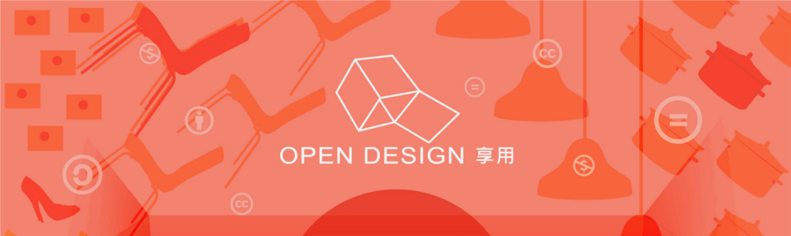
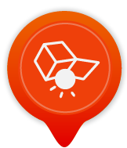

Jump to navigation
台灣創用CC計畫
Creative Commons Taiwan
Search form
Search
關於我們
創用CC授權
公眾領域
新知消息
特別企劃
再會了
感謝您對「台灣創用CC計畫」的支持與愛護，十多年來「台灣創用CC計畫」受中央研究院支持，並在資訊科學研究所以及資訊科技創新研究中心執行，
現已完成階段性的任務
。CC 授權條款在台灣的推廣使用，之後將由「開放文化基金會」協調組織的「
CC台灣社群
」進行。
本網站預計持續維運至 2021年底，網站內容基本上不會再更動。

Previous
Pause
Next
[Open Design|享用] 概念形象影片
什麼是開放設計(Open Design)？設計師的期待是什麼？跟創用CC授權有什麼關係？國際上有哪些開放設計的例子？讓我們繼續看下去 ......
更多
開放設計可能面對的挑戰
開放設計要推行有三個困難點，我自己的觀察是： 要推動開放設計，就要將之視為一個互動過程：辨識條款、使用它創造新設計、 分享出去。需要分享者、使用者的互為主體地成功互動，才能促進設計智慧財的散布與 激勵創新。這個過程會碰到三個主要障礙須克服，第一個，使用者要有自己再製的能力；第二個，分享機制的建立；第三個，不遵守法規的成本要高於守法成本。
更多
你Open，我Open，歡迎大家一起來Open Design!
生活中充滿設計的元素，但同時也充斥授權的議題！ Open Design 是一種新興的設計創作趨勢。因此，我們將以Open Design概念為策展主題，於9月開始在好丘以及台灣設計師週接力舉辦[Open Design｜享用]設計系列展。透過結合日常生活(Around)的場域設定，展演「開放」(OPEN)、「創用CC授權」(Creative Commons License)與「設計」(Design)間的關係。
更多

開放設計的各種可能
「設計」是一種用來塑造物品以及協助物品傳遞訊息的語言，使日常生活用品除了實用性，還能在觸覺、聽覺、視覺、嗅覺各方面做出暗示，喚醒使用者對物品的情感，同時也能讓物品彰顯社會價值、標示出個體生命的獨特性。從另一個角度來看，「設計」是挖掘問題、並提出大眾可負擔且有用的答覆，最終職責在於改造人類生存的環境和賴以為生的工具，進而改變人類本身。
更多
什麼是「開放設計」？
開放設計（open design） 指原作者同意將其設計自由傳播，且接受修改和延伸改作。近年來，這種將實物產品、機器和製造系統等「設計資料」公開的運動，與自由文化運動(free culture movement)、自由軟體(free software)、開放源碼軟體(open-source software)、或開放源碼硬體(open hardware)等發展息息相關。網際網路促進了開放設計的發展，並結合了設計師與使用者「共同創作」的概念。
更多
[Open Design|享用] 概念形象影片
開放設計可能面對的挑戰
你Open，我Open，歡迎大家一起來Open Design!
開放設計的各種可能
什麼是「開放設計」？
五角筆筒
五角筆筒 Dodecahedron Pen Container
寬16.5cm x 深 17.5cm x 高 14.5cm
創用 CC 授權條款 :
創用 CC 姓名標示─非商業性 3.0 台灣
藍圖下載
台灣創用CC計畫 製作 最佳瀏覽狀態：Chrome 或 IE9 或 Firefox2.0以上 (建議使用Chrome) ‧ 解析度1024*768 ‧
使用條款